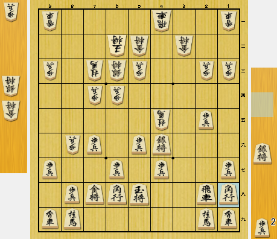

例題 1 / 2
▲ 先手
現在の形勢は？（※選択すると次へ進めます）
【実験へのご協力のお願い】
本アンケートにご協力いただきありがとうございます。
提示される将棋の局面図をご覧いただき、それぞれの形勢を7段階の中から最も適切と思われるものをご選択ください。
Q. 自分と同じレベルの相手と対戦した時「ほぼ同型（お互いの陣形がほぼ同じであり駒効率の差がない）」と仮定した場合、あなたにとって各判定（有利・優勢・勝勢）に相当する最低限の駒得はどれですか？

【説明文】
上記の画像画面のように将棋のある局面が提示されます。▲が先手、△が後手を表します。盤面の真下に表示されているのが駒どくを表示しています。今回の場合は先手の金と後手の角、1歩を交換されているので、先手角、1歩と後手金と記載がありますので駒どくは表示されているもので判断していただければと思います。ラジオボタンに先手勝勢〜後手勝勢のいずれかが選択できるようになっているので、局面をみて最も近い局面を選択してください。
例題は2問ありますので、2問やっていただいた後、本実験について回答していただければと思います。
現在の形勢は？（※選択すると次へ進めます）
現在の形勢は？（※選択すると次へ進めます）
すべての行程が完了しました。データ構造の確認用：